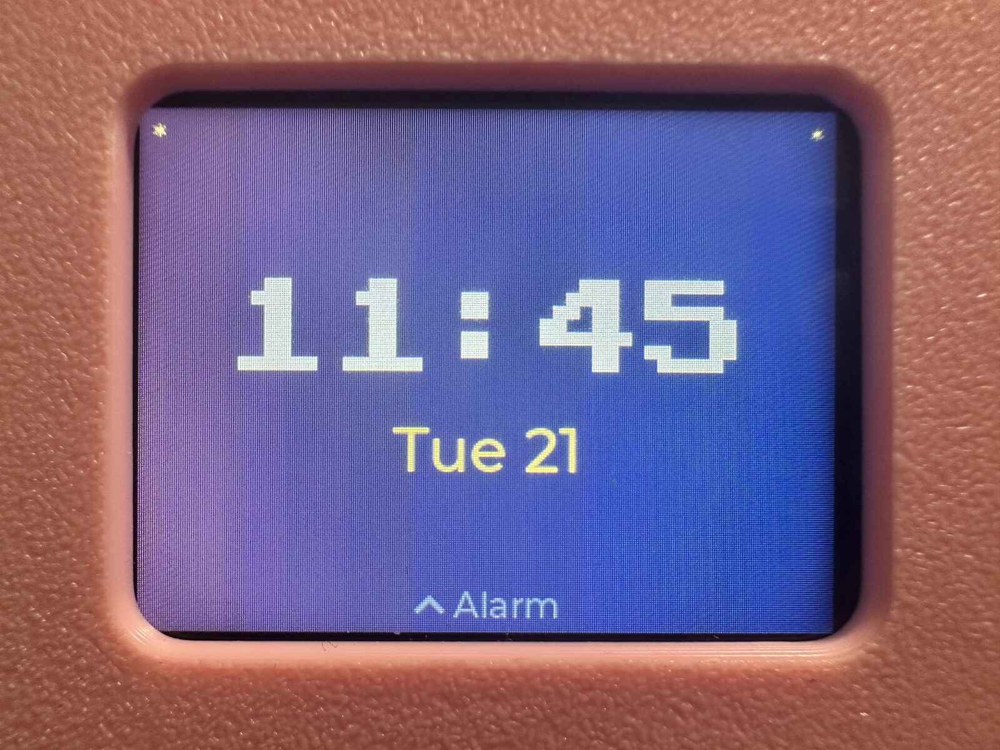

A custom interactive Kirby desktop companion built as a standalone smart display.
Role
Product designer and embedded developer
Team
Independent build
My contribution
Enclosure CAD, electronics integration, touch UI, firmware, networking, and audio
Overview
For a personal project, I wanted to build a custom interactive desktop companion as a gift for my girlfriend. I designed a Kirby-shaped device that works as a standalone smart display.
The goal was to make a polished device for time, weather, alarms, timers, and a built-in minigame. I chose a touch-driven interface so the 3D-printed enclosure could stay clean without bulky physical buttons.
System Overview
The brain of the project is a Waveshare ESP32-S3 development board with an integrated 2-inch capacitive touch screen. The ESP32-S3 handles the graphical interface, touch processing, and Wi-Fi connection.
For sound, I integrated a MAX98357 I2S DAC Class D amplifier with two Gikfun 40mm 40-ohm speakers, allowing the device to play alarms, interface sounds, and music through digital audio.
Mechanical Design
I designed the enclosure from scratch in Autodesk Fusion. The internal cavity mounts the Waveshare display and speakers flush with the surface while leaving space to route the ESP32, amplifier, and speaker wiring.
To keep the build inexpensive, I 3D printed the chassis in pink PLA, hand-painted the feet red, and used paper decals for the eyes.
Firmware
I built a touch-responsive GUI for the clock, weather, stopwatch, and minigame screens. The device uses Wi-Fi to fetch real-time weather data through REST APIs and synchronizes the clock with NTP.
Explore the touch displayPointerClick controls. Drag left or right between apps and up or down between views.TouchTap controls. Swipe between apps and views.KeyboardUse arrow keys for the same navigation.Star Catcher: drag Kirby to move.

Touch UI, clock screen
For alarms and interface sounds, I configured the I2S serial bus to stream digital audio from the ESP32 to the MAX98357 DAC without tying up CPU cycles.
Results
I designed, fabricated, and programmed the full device in a two-week Carnival-break timeline. It now runs 24/7 as a daily desktop companion, combining the 3D-printed enclosure, ESP32-S3 touch UI, Wi-Fi weather/NTP sync, and I2S audio into one always-on product.